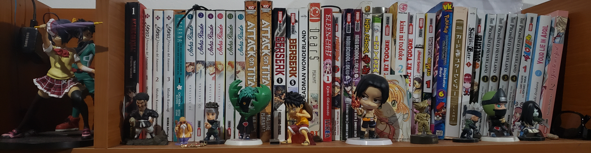

Mis intereses
Menú
Pagina principal
Estudios
intereses y hobies
Intereses
Anime
Manga
Colleccionar figuras de anime
Coleccionar Manga

Videojuegos
Super smash brothers profesional
Juegos de pelea
Musica Favorita
Mashiro's world
<
il vento d'oro